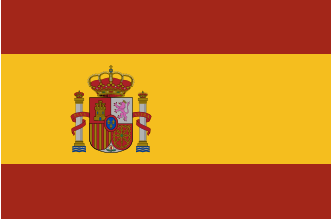

Renato Rodrigues Blanco
About Me
I am a Mechatronics Technician and an enthusiast for Industrial Automation and Robotics. With a working life of about 10 years, I had the opportunity to work in three countries, participate in various projects, volunteer and get a good experience.
Madrid, Spain

Spain is a country located on the Iberian Peninsula in southwestern Europe. A typical Spanish dish is paella, and the country is also famous for bullfighting. It has a climate with well-defined seasons, a strong tourism industry, and friendly people.